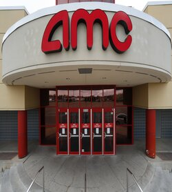
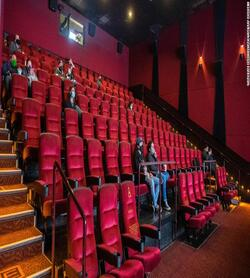
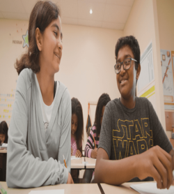
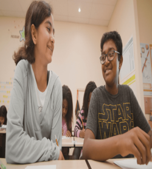
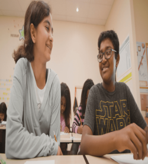

Roshan Patel
Hi, my name is Roshan Patel. I am a pre-business student at UCR. Before coming to UCR, I lived in La Mirada, California. Some of my hobbies include watching sports, hanging out with friends, and exercising. Things I love to do in my free time are going to the gym, playing basketball with friends, and going to the beach.
In the past few years, I have worked many different jobs while also volunteering and interning at many separate companies. After my sophomore year of high school, I worked at Kumon and helped tutor children. This was a big experience for me as I was able to work with people much younger than me and have them learn off of me. The following year, I ended up working at AMC movie theater. This was a great experience as I was able to see how hard certain jobs can be. Unfortunately, I had to quit my job there as I was offered an internship at a company my uncle worked at. This company was called Orora. There I was able to learn many different aspects of a business and how everything gets done so efficiently. There are many different layers to a company and it is hard for one person to do it all. It has to be a collaborative effort between many different people. They must all work with each other, even if they do not see eye to eye all the time. After that, I volunteered at St. Jude hospital in Orange County and was able to learn a lot from that. In the hospital, there were either people who were filled with joy or filled with sadness. I had to learn not to get too emotional from watching the people there and learn that it is part of life. Volunteering here really gave me a different perspective and outlook on life itself, and not to ever take things for granted, and to just go out and have fun. If you live life to the fullest, you will have no regrets. This experience taught me many life lessons and I am glad I was able to go through it.
Enter bio here
Enter bio here
Experience
Teaching Assistant
• Helped take requests at the front desk
• Took patients orders
• Gave people food
Education
UC Riverside
Portfolio


 

